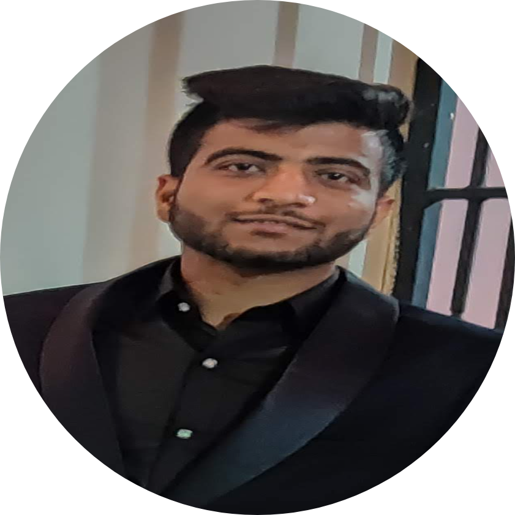

|  |
Nikhil AgarwalFounder of Berozgar.com
Contact Details |
Bansal Institute of Science and Technology, Bhopal
CGPA : 7.7/10 (till 6th Sem)
XII (Senior Secondary), Science
Year of Completion: 2017
CBSEBoard(DAV Public School ,Dhanbad (J.H))Percentage : 73.40%
X (Secondary)
Year of Completion: 2015
CBSE Board (DAV Public School , Dhanbad (J.H))
CGPA : 6.6/10